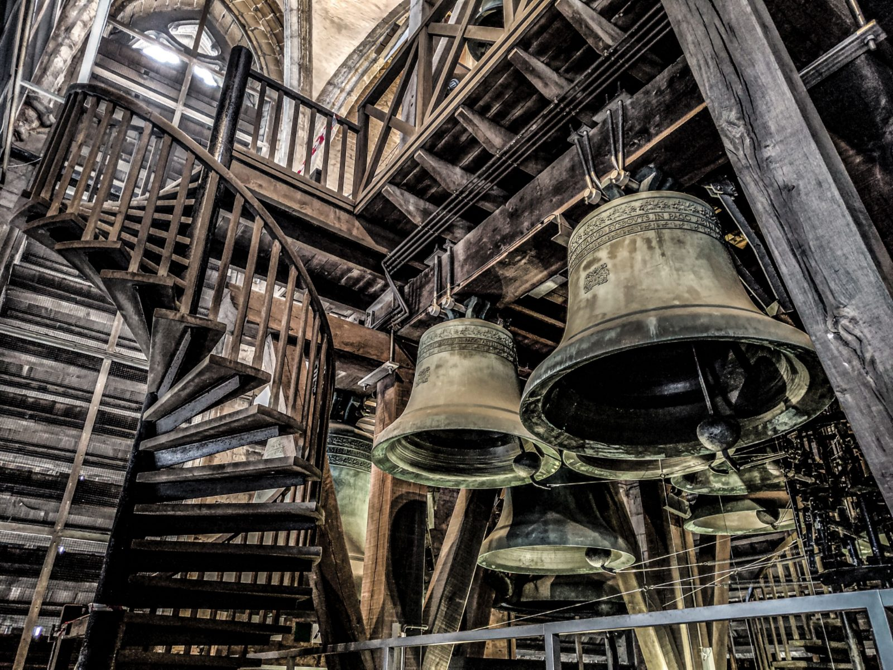

Harnscombe Ringing Centre
Eight bells in the tower of St Andrew, Harnscombe, a simulator room at its foot and practice five evenings a week. Tenor 14 cwt 0 qr 14 lb in F.
Today
Practice tonight 19:30 – 21:00 · 3 of 8 places free
Next course: Six Thursdays from 5 Nov · 8 learners · 2 places left
This week
| Day | Session | Time | Places | Action |
|---|---|---|---|---|
| Wed 14 Oct today | Tower practice | 19:30 – 21:00 | 3 of 8 | Book |
| Thu 15 Oct | Handling practice | 19:00 – 20:30 | 2 of 6 | Book |
| Fri 16 Oct | Method practice | 19:30 – 21:00 | 1 of 8 | Book |
| Sat 17 Oct | Open morning | 10:00 – 12:00 | Full | Waiting list |
| Tue 20 Oct | Simulator hour | 18:30 – 20:00 | 3 of 4 | Book |
| Wed 21 Oct | Tower practice | 19:30 – 21:00 | 3 of 8 | Book |
| Thu 22 Oct | Handling practice | 19:00 – 20:30 | 2 of 6 | Book |
The ring
| Bell | Note | cwt–qr–lb | Weight |
|---|---|---|---|
| 1 treble | F | 4–2–18 | 237 kg |
| 2 | E | 5–0–12 | 259 kg |
| 3 | D | 6–0–17 | 313 kg |
| 4 | C | 7–1–16 | 376 kg |
| 5 | B♭ | 8–3–17 | 452 kg |
| 6 | A | 9–3–1 | 496 kg |
| 7 | G | 11–2–27 | 596 kg |
| 8 tenor | F | 14–0–14 | 718 kg |
Back six cast 1874, trebles added 1993. Weights are scaled from the tenor; see About.
